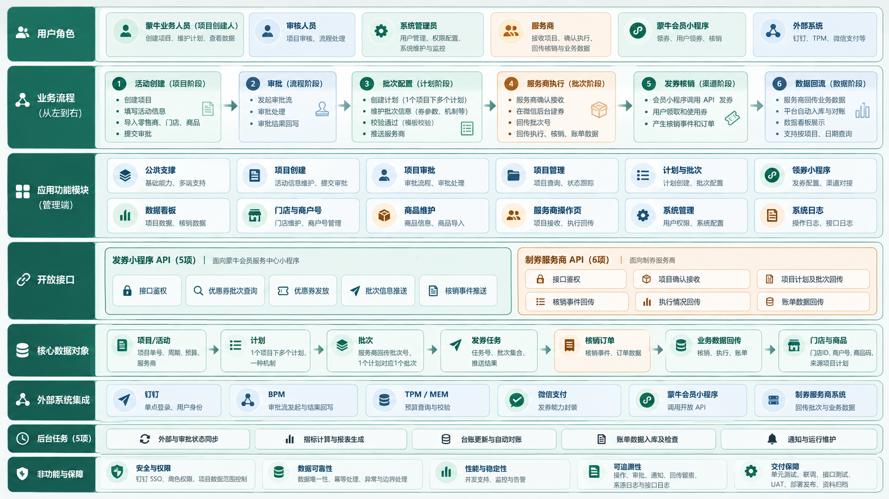
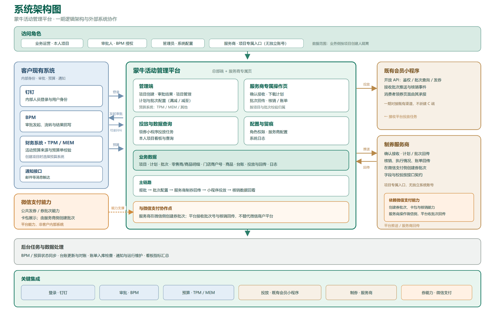
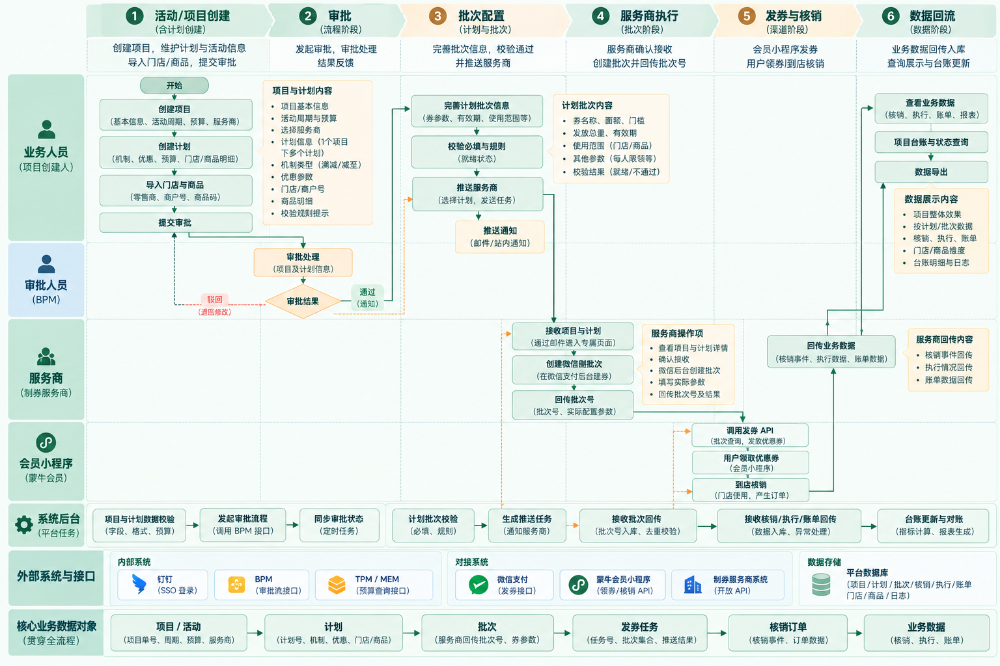

蒙牛活动管理平台 · 券中台
一期产品需求文档
客户确认与验收版
本文档用于与客户逐项确认一期产品的功能实现、业务流程与功能细节逻辑，并在一期开发完成后作为验收依据使用。
| 阅读摘要 · 一页看懂本期要交付什么 |
|---|
|
一、一期范围：总部端 12 个模块、发券小程序 5 个开放接口、制券服务商 6 个开放接口、5 项后台任务、7 项公共模块。消费者页面、计划变更、第三方埋点、直连微信建券与拉单不在本期。 二、主链路：报批 → 审批 → 补批次配置 → 推送服务商 → 服务商回传批次 → 推送渠道发券 → 核销与账单回流。项目六状态、计划三态与动作矩阵见第七章。 三、验收方式：每条功能需求（FR）配可判定验收标准，按第十三章 48 项核对清单逐项实测；P0 项须 100% 通过，致命与严重缺陷为 0。 四、需客户确认：第十四章 10 项待确认事项（审批方式、数据回流路径、预算强校验等）直接决定实现口径，请于需求确认会一次性定稿。 |
本文档用于与客户逐项确认一期产品的功能实现、业务流程与功能细节逻辑，并在一期开发完成后作为验收依据使用。文档中每一条功能需求（FR）都配有可判定的验收标准，验收时按「需求编号 → 功能表现 → 验收结论」逐条核对，避免以主观感受判定完成度。
本文档同时承担三项职责：
| 项目 | 内容 |
|---|---|
| 文档名称 | 蒙牛活动管理平台 一期产品需求文档（客户确认与验收版） |
| 版本 | V7.0 |
| 编制日期 | 2026-10-27 |
| 文档状态 | 待客户确认（确认后转「已确认」，作为验收依据冻结） |
| 适用系统 | 蒙牛活动管理平台（券中台 / 营销发券系统）一期 |
| 编制依据 | 2026-10-20 一期启动会结论、《蒙牛券中台一期 客户待确认事项清单 v4》、《蒙牛券中台开发计划 20261027》、总部端交互原型 V6.7 |
| 目标节点 | 2026-12-29 发布上线，12-30 运行监控，12-31 资料归档；2027-01-04 起进入运行维护 |
| 适用范围 | 总部端管理端、服务商操作页、两类开放 API、后台任务、公共模块、测试与上线保障 |
| 版本 | 日期 | 变更内容 | 编制 |
|---|---|---|---|
| V7.0 | 2026-10-27 | 首次以「客户确认 + 验收」为目标独立编制；建立 FR 编号体系与分模块验收清单；新增字段级校验表、状态动作矩阵、资金与对账口径、待确认事项清单 | 产品 |
变更规则：本文档一经客户确认即冻结为验收基线。后续任何功能增删、字段调整、口径变更，均须走第十四章变更流程并升版本号，口头确认不作为变更依据。
| 读者 | 建议重点阅读 | 阅读目的 |
|---|---|---|
| 客户业务方（市场部 / 事业部 / 数字化中心） | 第二、四、六、八、十三、十四章 | 确认业务怎么走、哪些功能要做、验收怎么判 |
| 客户 IT / 财务 / PMO | 第五、九、十、十一、十五章 | 确认字段口径、接口与数据、依赖与环境 |
| 我方开发与测试 | 全部章节，重点第七、八、九、十二章 | 作为开发与用例设计依据 |
| 服务商 / 小程序方 | 第六、八.六、八.七、第十章 | 确认交接动作、回传内容与接口责任 |
---
蒙牛券活动由各事业部、区域及经销商依据业务需要发起。当前活动发起的效率与执行效果，在很大程度上取决于各团队自身掌握的资源与经验：部分团队由服务商承接执行，部分团队依托平台后台自行配置，业务人员需在活动方案、券配置、门店与商户号、数据回收等环节之间投入大量协调工作。上述模式支撑了各事业部的日常营销开展，同时亦使业务侧承担了较多营销之外的协调性工作。随着参与团队与活动数量的增加，集团希望将相关能力沉淀为可复用的平台能力——为业务人员提供一套可自主使用的工作平台，并在此基础上统一协同过程与数据口径。对照该目标，现有协同方式在以下四个方面仍有提升空间：
上述四点的共性在于：业务侧缺少一套可自主发起、推进并查看结果的工作平台，集团侧亦因此缺少统一的协同过程与数据口径。一期由此切入，将「活动提报 → 审批 → 批次配置 → 服务商执行 → 数据回流」主链路线上化：一方面使业务人员可自主完成一档券活动的发起与规范执行，另一方面在过程中自然沉淀协同记录与业务数据，为集团层面的费用费效管控提供支撑——既保障业务侧可用、易用，亦支撑集团侧可视、可管。
一期不做大而全的营销中台，只跑通「活动创建 → 审批 → 批次配置 → 服务商执行 → 发券核销 → 数据回流」这一条主链路，并在链路上沉淀可追溯的项目、计划、批次与数据台账。
具体目标四条：
| 编号 | 判据 | 口径 | 判定方式 |
|---|---|---|---|
| G-01 | 主链路可完整跑通 | 从新建项目到数据在看板呈现，全流程无需人工改库或线下补录 | UAT 用 1 个真实活动走通全流程 |
| G-02 | 计划与批次一一对应 | 验收时有效计划数 = 有效批次数，无孤立批次、无跨项目绑定 | 数据核对 |
| G-03 | 关键动作可追溯 | 提交、审批、推送、确认、回传、终止六类动作均有系统日志，日志含操作人、时间、对象编号 | 抽查 10 条日志 |
| G-04 | 数据可回流可对账 | 核销事件与账单数据可按批次入库，日终对账产出差异清单 | 用测试数据核对一轮 T+1 对账 |
| G-05 | 服务商可自助执行 | 服务商凭邮件链接完成确认、下载、回传、上传四步，无需我方人工介入 | 用真实服务商账号演练一次 |
说明：一期不承诺业务效果类指标（如核销率提升幅度）。上述判据均为「系统是否具备该能力」的判定，不含对营销效果的评价。
---
| 术语 | 定义 | 易混淆点 |
|---|---|---|
| 项目 / 活动 | 一次营销活动的管理单元，一项目对应一个项目单号、一个活动周期、一个核销预算、一个服务商 | 与「计划」「批次」不是同义词，层级为 项目 > 计划 > 批次 |
| 计划 | 项目下的执行单元，一期按「计划1、计划2…」自动命名；一期一个计划只承载一种机制 | 计划名称不是券名称 |
| 批次 | 微信支付侧的一张券，一个计划对应一个批次，一一绑定 | 「批次号」由服务商在微信后台建券后回传，不由平台生成 |
| 券 | 消费者领取与核销的优惠凭证，一期为全场代金券 / 全场立减两类落地形态 | 券面额属于批次层字段，不在报批阶段填写 |
| 机制 | 优惠口径，一期只支持「满减」与「减至」两种类型 | 「机制类型」是枚举，「机制」是业务文案（如满 99 减 15） |
| 券成本 | 批次已核销单数 × 券面额，用于预算与看板口径 | 不等于销售额，也不等于平台支出 |
| 发券任务 | 一次向某个渠道小程序推送一批批次的动作记录，生成一个任务号 | 不是「配券」，平台不记录渠道侧配券状态 |
| 渠道 | 承接发券的小程序入口，一期为「会员服务中心」小程序；按线下物料 / 公众号 / 私域区分二维码渠道 | 「渠道小程序」与「二维码渠道」是两个维度，不要混用 |
| 回传 | 服务商或小程序方通过开放 API 将批次、核销、执行情况、账单数据写回平台 | 平台不主动向微信拉取订单（见 D-05） |
| 核销 | 消费者在门店使用券完成抵扣，产生核销事件与订单 | 核销事件需按「批次号 + 微信订单号」去重 |
| 就绪 / 校验通过 | 计划的批次必填信息完整且通过规则校验，具备推送服务商的条件 | 不等于微信侧已成功建券 |
| 对象 | 唯一标识 | 归属关系 | 关键约束 |
|---|---|---|---|
| 项目 | 项目单号（SO + 日期 + 序号）、活动 ID（MN-WX-年月-序号） | 归属创建组织 | 活动 ID 与项目单号全局唯一，创建后不可修改 |
| 计划 | 计划编号（PL-项目尾号-序号） | 属于唯一项目 | 审批前后沿用同一计划记录，不复制产生第二套 |
| 批次 | 外部批次号（6~20 位数字） | 属于唯一计划 | 批次号全平台唯一，一个计划最多绑定一个批次；未回传前允许为空 |
| 发券任务 | 任务号 | 属于唯一渠道 + 唯一项目 | 一次任务可包含该项目多个批次，任务号唯一 |
| 核销订单 | 微信订单号 | 属于唯一批次 | 必须携带有效批次号，否则进入待处理队列并告警 |
| 门店 | 门店 ID、微信商户号 | 平台级共享主数据 | 商户号 8~12 位数字且全局唯一 |
| 商品 | 69 码、店内码 | 平台级共享主数据 | 69 码与店内码至少填一个；同一店内码可对应多个零售商 |
---
| 分类 | 交付项 | 说明 |
|---|---|---|
| 管理端（12 模块） | 公共支撑、项目创建、项目审批、项目管理、计划与批次、领券小程序、数据看板、系统管理、系统日志、门店与商户号、商品维护、服务商操作页 | 服务商操作页通过邮件令牌免登录访问，不计入账号体系 |
| 开放 API（发券小程序 5 项） | 接口鉴权、优惠券批次查询、优惠券发放、批次信息推送、核销事件推送 | 面向蒙牛会员服务中心小程序 |
| 开放 API（制券服务商 6 项） | 接口鉴权、项目确认接收、项目计划及批次回传、核销事件回传、执行情况回传、账单数据回传 | 面向制券服务商 |
| 后台任务（5 项） | 外部与审批状态同步、指标计算与报表生成、台账更新与自动对账、账单数据入库及检查、通知与运行维护 | 定时任务，均需可重跑、可追溯 |
| 公共模块（7 项） | 蒙牛内部接口封装、钉钉单点登录、用户与组织、审批流发起与查询接口、TPM 预算查询、通知接口、微信支付发放优惠券 | 客户侧接口未就绪时按第十四章降级口径处理 |
| 交付保障 | 单元测试与代码审查、前后端联调、外部系统联调、六类系统测试、UAT、环境与培训、部署发布、监控与资料归档、运行维护 | 节点见 13.3 |
以下能力一期不建设、不交付、不计入验收范围。若客户需要，须按第十四章走变更流程，另行确认范围、工期与费用。
| 序号 | 不做的能力 | 原因 / 边界说明 |
|---|---|---|
| N-01 | 消费者端领券页面 / 独立 H5 / 独立小程序 | 页面由蒙牛会员服务中心小程序实现，我方只提供领券开放 API 与联调支持 |
| N-02 | 执行中计划变更（新增批次、增删门店、增删商品） | 属 v1.1 能力，界面已在原型示意，一期不实现、不验收 |
| N-03 | 第三方埋点（神策等）与曝光 / PV-UV / 点击类事件上报 | 埋点工程由客户数字化中心负责；我方仅提供带参链接与字段约定 |
| N-04 | 机制附件上传与文件管理 | 一期项目表单不含附件区；机制以结构化字段记录 |
| N-05 | 邮件已读回执 | 通知接口只保证发送与失败重试，不采集阅读状态 |
| N-06 | 独立工作台 / 消息中心 | 见 D-01，默认登录后按角色落地到项目审批或项目管理 |
| N-07 | 平台直连微信支付建券、直连订单拉取、直连核销回调 | 一期数据入口为服务商与小程序回传（见 D-05）；公共模块仅封装发券能力 |
| N-08 | 三方资金结算、差异裁决、结算单审批 | 一期只做台账与数据对账，不做资金划付 |
| N-09 | 门店库 / 商品库 / 预算系统的系统级打通 | 一期以模板导入与 PO 校验替代，导入即生效 |
| N-10 | 其他小程序渠道接入（如营养生活家） | 一期只对接会员服务中心小程序，其余入二期 |
第十四章列出 10 项需客户书面确认的事项（D-01～D-10）。在客户确认前，本文档已按「我方默认口径」编写；确认结果若与默认口径不同，按变更流程调整，不视为我方漏做。
---
| 角色 | 归属 | 核心操作 | 数据范围 | 账号 |
|---|---|---|---|---|
| 管理员 | 数字化中心 | 角色与组织维护、审批、全部业务操作、日志查看 | 全量 | 钉钉账号 |
| 审批人 | 数字化中心（默认单级） | 查看业务方案、同意、驳回 | 授权审批范围内的项目 | 钉钉账号 |
| 业务运营 | 总部市场部 / 事业部 / 区域 / 经销商 | 创建项目、补充批次配置、推送服务商、查看投放数据 | 本级及下级组织 | 钉钉账号 |
| 财务 | 财务部 | 查看项目、预算占用、核销与对账结果 | 全量只读 | 钉钉账号 |
| 服务商 | 第三方服务公司 | 确认执行、下载方案、回传批次、上传订单数据 | 令牌绑定的单个项目 | 不发账号，凭邮件链接访问 |
一期角色为初始化固定角色，权限矩阵随版本预置；「自定义角色 + 拖拽配权」不在本期（见 4.2）。
| 菜单 | 管理员 | 审批人 | 业务运营 | 财务 |
|---|---|---|---|---|
| 项目创建 | 可编辑 | 不可见 | 可编辑 | 不可见 |
| 项目审批 | 可审批 | 可审批 | 只读（本人提报的可查看进度） | 不可见 |
| 项目管理 | 全量可操作 | 只读 | 本级及下级可操作 | 只读 |
| 计划与批次 | 全量可操作 | 只读 | 本级及下级可操作 | 只读 |
| 领券小程序 | 可操作 | 不可见 | 可操作 | 不可见 |
| 数据看板 | 全量 | 授权范围 | 本级及下级 | 全量只读 |
| 门店与商户号 | 可维护 | 不可见 | 可维护 | 只读 |
| 商品维护 | 可维护 | 不可见 | 可维护 | 只读 |
| 系统管理 | 可维护 | 不可见 | 不可见 | 不可见 |
| 系统日志 | 可查看 | 不可见 | 不可见 | 可查看 |
---



| 步骤 | 动作 | 执行方 | 系统产出 |
|---|---|---|---|
| ① 报批 | 填写基本信息、预算与费用科目、服务商、批次计划（机制、活动零售商、活动商品），提交审批 | 业务运营 | 项目单号、计划记录、审批快照（版本 1） |
| ② 审批 | 查看业务方案（不含券规则细节），同意或驳回 | 审批人 | 审批结论、审批时间、驳回留痕 |
| ③ 补配置 | 逐计划补充批次信息（券名称、面额、门槛、可用时间、发放上限、使用须知）与门店 / 商品明细 | 业务运营 | 批次配置表单、配置状态、计划预算 |
| ④ 推送 | 全部计划校验通过后推送服务商，系统发执行通知邮件 | 业务运营 | 交接记录、邮件发送记录、访问令牌 |
| ⑤ 执行 | 服务商确认执行，下载批次计划，在微信后台建券并回传批次号与商户号，上传订单数据 | 服务商 | 批次绑定、执行状态、订单数据 |
| ⑥ 发券 | 按渠道小程序圈选已回传批次，推送发券，生成任务号 | 业务运营 | 发券任务、推送留痕 |
| ⑦ 回流 | 核销事件与账单数据回传入库，生成台账、对账与看板 | 服务商 / 小程序方 / 系统 | 核销明细、台账、对账差异、看板指标 |
| 交接点 | 交出方 | 接收方 | 交接内容 | 系统留痕 |
|---|---|---|---|---|
| H-1 提交审批 | 业务运营 | 审批人 | 业务方案快照（基本信息 / 预算 / 服务商 / 批次计划） | 提交时间、提报人、快照版本 |
| H-2 通过审批 | 审批人 | 业务运营 | 审批结论 | 审批人、审批时间、结论 |
| H-3 推送服务商 | 业务运营 | 服务商 | 批次计划、券规则、门店商品明细、邮件链接 | 推送时间、收件人、批次清单 |
| H-4 回传批次 | 服务商 | 平台 | 批次号、微信商户号、订单数据 | 回传时间、校验结果 |
| H-5 推送发券 | 业务运营 | 小程序方 | 批次清单、商户号、有效期 | 任务号、推送时间、批次清单 |
| H-6 数据回流 | 服务商 / 小程序方 | 平台 | 核销事件、执行情况、账单数据 | 入库时间、去重结果、对账差异 |
| 事项 | 时限 | 系统表现 |
|---|---|---|
| 审批处理 | 无强制时限 | 待审批超过 3 个工作日，列表标注「超时未审批」 |
| 服务商确认 | 推送后 2 个工作日 | 项目卡片标注「N 天 N 小时未确认」，超时标红 |
| 重发邮件 | 无限制 | 每次重发写日志，卡片显示最近重发时间 |
| 数据回流 | T+1 | 看板默认展示至 T-1，跨日未到数在页面提示 |
时限为业务约定，系统只做提示不做阻断；超过时限不改变项目状态。
---
原型为 4 个节点 / 11 个状态。状态随业务流程自动推进，不支持手工改状态；审批在 BPM 完成，系统只提交审批单并接收结果。
| 节点 | 状态 | 原型 key | 进入条件 | 业务含义 |
|---|---|---|---|---|
| 草稿 | 草稿 | editing | 新建项目未提交；或未通过后修改、尚未重新提交 | 可编辑、可提交；草稿不提供详情抽屉与批次计划入口 |
| 审批 | 审批中 | approving | 提交审批成功，BPM 审批任务处理中 | 报批内容锁定，等待审批结果；系统内无审批按钮 |
| 审批 | 已通过 | passed | BPM 所选审批人全部同意 | 可进入计划与批次，完善批次配置 |
| 审批 | 未通过 | rejected | BPM 任一审批人不同意 | 可编辑后重新提交 |
| 推送 | 待推送 | to_push | 审批通过且批次配置齐全 | 等待推送服务商 |
| 推送 | 已推送 | pushed | 确认推送成功，邮件已发出 | 配置锁定，等待邮件回执 |
| 推送 | 待确认 | to_confirm | 服务商已收到推送链接 | 配置锁定，等待服务商确认承接 |
| 推送 | 已确认 | confirmed | 服务商确认承接 | 配置锁定，等待回传批次号 |
| 执行 | 已配置 | configured | 批次号回传并校验通过 | 等待服务商上传账单 |
| 执行 | 执行中 | running | 服务商已上传第 1 次账单 | 活动执行中，可查看计划、挂券与数据 |
| 执行 | 已结束 | finished | 项目周期结束或手工终止 | 历史只读，释放未核销预算 |
矩阵只列原型页面可见动作；按钮可见性按矩阵渲染，越权调用接口一律返回「当前状态不允许该操作」。审批动作在 BPM 完成，系统内不提供同意 / 驳回 / 撤回。
| 状态 | 查看详情 | 编辑项目 | 提交审批 | 完善批次计划 | 推送服务商 | 重发邮件 | 复制链接 | 终止项目 | 复制为新项目 |
|---|---|---|---|---|---|---|---|---|---|
| 草稿 | — | 允许 | 允许 | — | — | — | — | — | — |
| 审批中 | 允许 | — | — | — | — | — | — | — | — |
| 已通过 | 允许 | — | — | 允许 | — | — | — | — | — |
| 未通过 | 允许 | 允许 | 允许 | — | — | — | — | — | — |
| 待推送 | 允许 | — | — | 允许 | 允许 | — | — | 允许 | — |
| 已推送 | 允许 | — | — | — | — | 允许 | 允许 | 允许 | — |
| 待确认 | 允许 | — | — | — | — | 允许 | 允许 | 允许 | — |
| 已确认 | 允许 | — | — | — | — | 允许 | 允许 | 允许 | — |
| 已配置 | 允许 | — | — | — | — | — | — | 允许 | — |
| 执行中 | 允许 | — | — | — | — | — | — | 允许 | — |
| 已结束 | 允许 | — | — | — | — | — | — | — | 允许 |
| 状态 | 计划与批次 | 挂券与配置 | 数据看板 |
|---|---|---|---|
| 已配置 | 允许 | — | — |
| 执行中 | 允许 | 允许 | 允许 |
| 其他状态 | — | — | — |
提交审批（草稿 / 未通过 → 审批中）
审批结果回写（审批中 → 已通过 / 未通过）
推送服务商（待推送 → 已推送）
推送确认文案：请确认，与本项目配置名单中的零售商已达成合作，且已通知零售商打开单品回传操作。避免因名单信息错漏，或合作尚未达成、后续中止等原因产生消费者客诉，或其他数据披露风险。按钮为「暂不推送」和「确认推送」。
服务商确认（已推送 / 待确认 → 已确认）
批次号回传（已确认 → 已配置）
开始执行（已配置 → 执行中）
| 配置情况 | 判定 | 处理 |
|---|---|---|
| 待补充 | 批次信息表单未填写（券名称、面额、门槛、时间、上限均空） | 计划行显示「补充配置」 |
| 存在缺项 | 表单已填但存在必填缺失或规则不通过 | 抽屉内提示缺失项，保存不通过 |
| 校验通过 | 全部必填完整、规则通过、零售商明细 ≥1 条 | 计划行显示「明细」，项目可推送 |
配置完整性不等于微信侧已建券或审核。计划列表按项目状态派生显示「待推送 / 已推送 / 待服务商确认 / 已确认 / 已配置 / 进行中 / 已结束 / 已中止」等汇总状态；筛选条提供待完善、待配置、进行中、已结束、已中止 5 个选项。
| 场景 | 处理 | 留痕 |
|---|---|---|
| 审批未通过 | 项目进入未通过；可编辑后重新提交；审批意见由 BPM 回写 | 审批人、结果、时间及意见 |
| 周期结束 | 停止新增配置及投放，保留历史数据和已发生业务的回传对账 | 结束时间 |
| 通知失败 | 记录失败并按约定重试，不误记成功 | 对象及结果 |
| 超时未确认 | 已推送 / 待确认状态不变；卡片标红并支持重发 | 重发次数与时间 |
| 批次号冲突 | 回传时校验全平台唯一，冲突行标红并拦截整批提交 | 冲突批次号与占用方 |
| 终止 | 待推送、已推送、待确认、已确认、已配置、执行中可终止；终止后进入已结束，全部写操作关闭，释放未核销预算 | 终止时间、操作人 |
| 计划 / 项目删除 | 本期不提供删除项目或删除计划入口；已提交过的计划不可删除 | — |
| 历史数据 | 有效关联或核销记录不得直接覆盖 | 历史归属 |
---
本章按模块给出功能需求编号（FR-xx），每条含规则要点与可判定的验收标准。字段级细则见第九章，接口与数据见第十章。标注「P0」为验收必过项，未通过即整体不通过；「P1」为应通过项，可在验收期内修复后复验。
模块目标：内部用户通过钉钉单点登录进入系统，按角色渲染菜单与数据范围；服务商通过令牌进入操作页。
| 编号 | 功能 | 规则要点 | 验收标准（可判定） | 级别 |
|---|---|---|---|---|
| FR-01 | 钉钉单点登录 | 未登录访问任意页面重定向至钉钉扫码；登录成功后回跳原地址；登录态失效给出重新登录提示 | ① 未登录访问项目管理被拦截；② 扫码成功后回到原页面；③ 会话过期后操作提示重新登录，不出现白屏 | P0 |
| FR-02 | 角色与菜单渲染 | 按 5.2 矩阵渲染菜单；无权限菜单不显示，直接访问 URL 返回无权限页 | ① 财务账号看不到系统管理；② 手工输入管理端 URL 返回无权限提示 | P0 |
| FR-03 | 退出登录 | 顶栏提供退出，退出后清理会话并回登录页 | 退出后浏览器后退无法回到已登录页面 | P1 |
模块目标：把「写清做什么」这一件事做扎实——填基本信息、预算、服务商与批次计划，提交审批。券规则细节不在本页填写。
| 编号 | 功能 | 规则要点 | 验收标准（可判定） | 级别 |
|---|---|---|---|---|
| FR-04 | 新建项目基本信息 | 项目名称、项目目标、投放平台（固定微信支付）、活动周期、活动负责人、联系方式 | 必填项缺失时按字段提示，不整页报错；活动周期可用日期控件选择并显示 YYYY-MM-DD | P0 |
| FR-05 | PO 单号与预算带出 | 输入 PO 单号后校验存在性与审批状态，带出核销预算、费用科目、承担主体、预算来源（只读） | ① 输入无效 PO 提示「PO 单不存在或未审批」；② 有效 PO 自动带出四项且不可编辑 | P0 |
| FR-06 | 服务商选择 | 选择服务商后自动带出唯一对接联系人与邮箱，只读；不允许多联系人 | 选择后联系人、邮箱自动填充且不可改；一家服务商仅一条联系人记录 | P0 |
| FR-07 | 批次计划逐行维护 | 每行含机制（文案）、机制类型（满减 / 减至，默认满减）、活动零售商明细、活动商品明细；计划名称按序号自动生成 | ① 可增删行；② 计划名称显示为「计划1、计划2」；③ 机制为空时提交被拦截并指出第几行 | P0 |
| FR-08 | 零售商明细维护 | 逐行维护或按模板导入；字段见 9.2；至少 1 条 | ① 明细抽屉可增删行；② 导入后可回填；③ 0 条时提交被拦截 | P0 |
| FR-09 | 活动商品明细维护 | 逐行维护或按模板导入；同一店内码换零售商须拆行 | 同「店内码 + 零售商」重复时提交前拦截并提示重复行 | P0 |
| FR-10 | 提交审批 | 执行 7.3 全部校验，通过后进入待审批并冻结快照 | ① 缺项时一次性列出全部缺失项（不只报第一个）；② 成功后跳到项目管理并可在待审批筛选中看到 | P0 |
模块目标：审批人只看「要不要批」，看到的是业务方案，不是券参数。
| 编号 | 功能 | 规则要点 | 验收标准（可判定） | 级别 |
|---|---|---|---|---|
| FR-11 | 待审批列表 | 卡片字段与项目管理一致（创建部门 / 投放平台 / 预算来源 / 核销预算 / 活动周期 / 服务商 / 机制 / PO 单号 / 项目单号 / 最近保存时间）；支持审批状态与关键字筛选；每页 15 条 | ① 默认筛选「待审批」；② 关键字可命中项目名称、项目单号、提报人；③ 分页显示总数 | P0 |
| FR-12 | 审批详情 | 以抽屉展示基本信息、预算、服务商、批次计划（机制、零售商、商品明细）；不展示券面额、门槛等未产生的字段 | 详情字段与本页卡片一致，无多余字段；明细可展开查看逐行 | P0 |
| FR-13 | 同意 / 驳回 | 仅待审批卡片显示同意、驳回；驳回原因必填 | ① 驳回不填原因无法提交；② 同意后项目进入待推送服务商；③ 两种操作均写系统日志 | P0 |
模块目标：一个列表看清所有项目的状态、进度与下一步该做什么。
| 编号 | 功能 | 规则要点 | 验收标准（可判定） | 级别 |
|---|---|---|---|---|
| FR-14 | 项目列表与状态筛选 | 顶部按六状态计数，点击即筛选，默认「全部」；卡片显示五段进度条与批次配置计数 | ① 计数与列表条数一致；② 进度条与状态同名；③ 点击状态项立即生效无需刷新 | P0 |
| FR-15 | 卡片动作 | 按 7.2 矩阵渲染主按钮（继续完善计划 / 推送服务商 / 重发 / 终止 / 编辑 / 提交 / 删除 / 复制） | 每个状态下按钮集合与矩阵完全一致，无多余按钮 | P0 |
| FR-16 | 项目详情 | 抽屉展示基本信息、预算、服务商、批次计划、时间线（提交 / 审批 / 推送 / 确认 / 终止） | 时间线与实际操作时间一致，缺失节点显示为空而非 1970 日期 | P0 |
| FR-17 | 复制为新草稿 | 复制项目基础信息与批次计划，生成新项目单号，状态为草稿，不复制审批与交接记录 | 复制后新项目独立，修改不影响原项目 | P1 |
| FR-18 | 终止项目 | 二次确认，终止原因必填，终止后只读并释放未核销预算 | ① 未填原因无法终止；② 终止后所有写操作按钮消失；③ 日志记录原因 | P0 |
模块目标：把报批时的「做什么」补成可直接交付给服务商的「怎么配」。本模块是一期使用频率最高的页面。
| 编号 | 功能 | 规则要点 | 验收标准（可判定） | 级别 |
|---|---|---|---|---|
| FR-19 | 两种进入方式 | 菜单进入看全部计划与批次；从项目进入只显示该项目，并在顶部展示项目基本信息、预算、服务商三段 | ① 两种入口数据范围正确；② 项目入口不改动项目数据 | P0 |
| FR-20 | 计划列表 | 显示计划编号、计划名称、机制、配置状态、批次号、面额、门槛、有效期、批次状态；支持按项目、状态、关键字筛选；每页 15 条 | 各列取值与批次表单一致，无二处口径 | P0 |
| FR-21 | 补充批次信息 | 打开批次表单，顶部只读展示该计划方案快照（券名称、发券方式、机制、活动周期、计划预算）；下方为券字段、可用时间、发放限制、使用须知、批次号 | ① 快照不可编辑；② 字段与 9.3 一致；③ 右侧实时预览卡包样式 | P0 |
| FR-22 | 券字段校验 | 券名称 ≤9 汉字（提示级）；券面额 >0；满减须满足面额 < 门槛；减至须满足减至价 >0 且（有门槛时）减至价 < 门槛 | 逐条录入非法值时均被拦截并给出具体原因，不出现「保存成功但数据错误」 | P0 |
| FR-23 | 可用时间约束 | 开始、结束必填；开始不晚于结束；必须落在项目活动周期内 | ① 早于周期开始或晚于周期结束直接拦截；② 跨度 >90 天仅提示不阻断 | P0 |
| FR-24 | 明细与保存 | 零售商明细、商品明细各 ≥1 条方可「校验通过」；允许保存草稿 | ① 缺明细时保存草稿成功但状态为「完善中」；② 明细补全后状态转「校验通过」 | P0 |
| FR-25 | 计划详情 | 抽屉查看计划全量信息与两张明细表，含导入来源标记 | 详情与表单一致，明细可追溯来源 | P1 |
模块目标：服务商拿到链接就能干活，四步走完，不需要培训。
| 编号 | 功能 | 规则要点 | 验收标准（可判定） | 级别 |
|---|---|---|---|---|
| FR-26 | 访问与摘要 | 凭令牌访问，页面展示活动摘要（名称、活动 ID、周期、投放平台、机制、核销预算）与四步时间线 | 无效/过期令牌显示明确提示，不暴露活动内容 | P0 |
| FR-27 | 确认执行 | 步骤①确认执行，写入确认人与时间，项目转执行中 | 重复点击不产生重复确认记录 | P0 |
| FR-28 | 下载批次计划 | 步骤②下载该项目的批次计划文件（含机制、门店、商品明细） | 下载文件内容与系统内明细逐行一致 | P1 |
| FR-29 | 回传批次号与商户号 | 步骤③按计划逐行填写批次号与微信商户号；批次号 6~20 位数字且全平台唯一；商户号 8~12 位数字且必须存在于门店与商户号库 | ① 任一校验不过时该行标红并拦截整批提交；② 提交成功后策划端立即可见批次号 | P0 |
| FR-30 | 上传订单数据 | 步骤④上传订单数据文件，返回接收结果（成功条数 / 失败条数 / 失败原因文件） | 上传后可在系统日志查到上传记录与条数 | P1 |
| FR-31 | 邮件模板 | 通知邮件含收件人、主题「【活动执行通知】… 待您确认」、活动名称 / ID / 周期 / 投放平台 / 机制 / 核销预算、确认按钮、2 个工作日与链接有效期提示；不含内部审批意见 | 实际收件内容与模板一致，无内部字段泄漏 | P0 |
模块目标：管清「哪些批次推到了哪个渠道」，不承担配券状态管理。
| 编号 | 功能 | 规则要点 | 验收标准（可判定） | 级别 |
|---|---|---|---|---|
| FR-32 | 渠道小程序列表 | 显示小程序名称、AppID、说明、已推送批次数、最近推送时间、启用状态；支持启停 | 停用渠道不出现在创建任务的可选范围 | P0 |
| FR-33 | 创建发券任务 | 只允许选进行中项目；列出该项目中「供应商已回传批次号」且「未推送到当前渠道」的批次（批次号 / 计划 / 面额 / 门槛 / 商户号 / 有效期）；勾选核对后一次推送，生成任务号 | ① 待确认状态的项目不在可选范围；② 无批次号的不在可选范围；③ 已推送过的批次不重复出现；④ 任务号唯一 | P0 |
| FR-34 | 发券任务与已推送批次 | 任务按任务号归并展示项目、批次、推送时间；已推送批次为全量列表，含批次号、项目·计划、商户号、推送时间、推送结果 | 任务与批次记录一一对应，重复推送有日志可查 | P0 |
模块目标：全平台唯一的门店与商户号主数据，供明细「从库选择」，从源头减少商户号填错。
| 编号 | 功能 | 规则要点 | 验收标准（可判定） | 级别 |
|---|---|---|---|---|
| FR-35 | 门店维护 | 门店 ID（可空自动生成、全库唯一）、零售商、门店名称、省份、城市、微信商户号、经纬度、状态；支持新增、编辑、启停 | 字段规则见 9.4；停用门店不可被新明细选择，历史明细不受影响 | P0 |
| FR-36 | 模板导入 | 提供标准模板（列名固定），导入做行级校验，异常行列出原因 | ① 表头不匹配时提示模板错误；② 重复商户号、经纬度越界、缺字段均逐行报错；③ 无表头文件不丢行 | P0 |
| FR-37 | 从库选择 | 创建计划与补充批次信息时可「从门店库选择」，多选后按商户号去重写入 | 已存在的商户号不重复写入，并提示跳过条数 | P1 |
| 编号 | 功能 | 规则要点 | 验收标准（可判定） | 级别 |
|---|---|---|---|---|
| FR-38 | 商品维护 | 69 码、商品名称、店内码、店内码所属零售商（可多个，新零售商追加不覆盖）、规格、状态 | 同一店内码新增零售商时追加标签，历史不丢失；品牌、品类字段不存在 | P0 |
| FR-39 | 商品校验 | 69 码 8~14 位数字；69 码与店内码至少填一个；填了店内码至少一个所属零售商；69 码 / 店内码不可重复 | 逐条非法输入被拦截并提示具体规则 | P0 |
| FR-40 | 商品导入与选择 | 支持模板导入与「从商品库选择」；按「69 码/店内码 + 零售商」判重 | 导入重复行单独报出，不静默覆盖 | P1 |
模块目标：活动效果一屏看清，口径与呼市 / 河南已对齐版本保持一致，不另起炉灶。
| 编号 | 功能 | 规则要点 | 验收标准（可判定） | 级别 |
|---|---|---|---|---|
| FR-41 | 核心指标卡 | 核销订单数、销售额、优惠金额、笔单价、ROI 五项，含同比与环比 | 数字与口径说明一致，可点开查看口径 | P0 |
| FR-42 | 逐级下钻 | 活动 → 计划 → 批次 → 渠道二维码四级下钻，支持按时间与投放平台筛选 | 任一层级点击后下层数据之和等于上层数值（允许展示舍入说明） | P0 |
| FR-43 | 明细与分布 | 活动 / 计划 / 批次三级明细表（核销数、销售额、核销率、销售额占比）；销售额趋势、时段分布、周内占比 | 表格与图表数据同源，无两套口径 | P1 |
| FR-44 | 口径说明与数据时点 | 页面固定展示口径说明与数据截止时间（T-1） | 未到数时有明确提示，不显示为 0 造成误判 | P0 |
| 编号 | 功能 | 规则要点 | 验收标准（可判定） | 级别 |
|---|---|---|---|---|
| FR-45 | 角色与权限 | 角色列表 + 权限矩阵抽屉（菜单级）；一期预置四个内部角色 | 修改角色权限后该角色用户重新登录生效，越权接口返回无权限 | P0 |
| FR-46 | 组织架构 | 集团 / 事业部 / 区域 / 经销商四级，支持查看上下级关系与启停 | 停用组织后其下用户不可新建项目，历史数据保留 | P1 |
| FR-47 | 服务商配置 | 每家公司唯一对接联系人与邮箱、承接平台、启用状态；修改不影响历史项目已记录的收件人 | ① 一家服务商仅一条联系人；② 改配置后历史项目详情中的联系人不变 | P0 |
| 编号 | 功能 | 规则要点 | 验收标准（可判定） | 级别 |
|---|---|---|---|---|
| FR-48 | 关键操作留痕 | 记录时间（秒）、操作人（含角色）、模块、操作、对象（含编号）、说明、结果、来源 IP | 六类关键动作（提交、审批、推送、确认、回传、终止）均可查到 | P0 |
| FR-49 | 查询与导出 | 按模块、结果、时间范围、关键字筛选；按时间倒序；支持导出当前筛选结果 | 导出内容与筛选结果一致，导出动作本身也写日志 | P1 |
日志保留期：生产环境不少于 12 个月（可配置），不采用原型中的条数上限做法。
| 编号 | 功能 | 规则要点 | 验收标准（可判定） | 级别 |
|---|---|---|---|---|
| FR-50 | 发券小程序 API | 接口鉴权、批次查询、优惠券发放、批次信息推送、核销事件推送五项 | 五项接口按契约返回，异常码齐全，联调通过 | P0 |
| FR-51 | 制券服务商 API | 接口鉴权、项目确认接收、计划及批次回传、核销事件回传、执行情况回传、账单数据回传六项 | 同上；批次回传须校验唯一性与商户号存在性 | P0 |
| FR-52 | 接口幂等与重试 | 资金与核销相关接口按业务主键幂等；重复请求返回同一结果，不重复入账 | 同一核销事件重复推送 3 次，入库 1 条，返回一致 | P0 |
| FR-53 | 后台任务 | 状态同步、指标计算与报表、台账更新与自动对账、账单入库及检查、通知与运维 | ① 任务可重跑且结果一致；② 失败有告警与补偿入口；③ 执行有记录 | P0 |
---
本章是开发、测试与验收共用的字段口径。未列出的字段视为无额外约束。所有日期统一 YYYY-MM-DD，所有金额单位为元、保留两位小数，所有编码类字段按文本处理。
| 分区 | 字段 | 必填 | 类型 / 长度 | 校验规则 | 来源 |
|---|---|---|---|---|---|
| 基本信息 | 项目名称 | 是 | 文本 ≤50 字 | 同名校验提示不阻断 | 手工 |
| 基本信息 | 项目目标 | 否 | 文本 ≤100 字 | — | 手工 |
| 基本信息 | 投放平台 | 是 | 枚举 | 一期固定「微信支付」 | 系统 |
| 基本信息 | 活动周期（起 / 止） | 是 | 日期 | 起始不晚于结束；批次可用时间须落在其内 | 手工 |
| 基本信息 | 活动负责人 | 是 | 文本 ≤20 字 | — | 手工 |
| 基本信息 | 联系方式 | 是 | 文本 11 位 | 手机号格式校验 | 手工 |
| 预算与费用 | PO 单号 | 是 | 文本 | 必须存在于 PO 库且已审批 | 手工 |
| 预算与费用 | 核销预算 | 是 | 金额 | 由 PO 带出，只读 | PO 库 |
| 预算与费用 | 费用科目 | 是 | 文本 | 由 PO 带出，只读 | PO 库 |
| 预算与费用 | 承担主体 | 是 | 文本 | 由 PO 带出，只读 | PO 库 |
| 预算与费用 | 预算来源 | 是 | 枚举 | BU 自投 / 集团统投，由 PO 带出 | PO 库 |
| 服务商 | 服务商 | 是 | 枚举 | 从服务商库选择 | 手工 |
| 服务商 | 对接联系人 / 邮箱 | 是 | 文本 | 选择服务商后自动带出，只读 | 服务商库 |
| 批次计划 | 机制 | 是 | 文本 ≤30 字 | 非空；文案与机制类型一致 | 手工 |
| 批次计划 | 机制类型 | 是 | 枚举 | 满减 / 减至，默认满减 | 手工 |
| 批次计划 | 活动零售商明细 | 是 | 表格 | ≥1 条，字段见 9.2 | 手工 / 导入 / 库选 |
| 批次计划 | 活动商品明细 | 是 | 表格 | ≥1 条，字段见 9.2 | 手工 / 导入 / 库选 |
活动零售商明细（7 列）
| 字段 | 必填 | 规则 |
|---|---|---|
| 零售商名称 | 是 | 文本 |
| 门店 ID | 否 | 留空自动生成，全库唯一 |
| 门店名称 | 是 | 文本 |
| 省份 | 是 | 文本 / 字典 |
| 城市 | 是 | 文本 / 字典 |
| 微信商户号 | 否 | 填写时须为 8~12 位数字；留空时提示「推送服务商后由服务商提报时补充」 |
| 经度 / 纬度 | 否 | 成对填写；经度 -180~180，纬度 -90~90 |
活动商品明细（4 列）
| 字段 | 必填 | 规则 |
|---|---|---|
| 69 码 | 条件必填 | 与店内码至少填一个；8~14 位数字 |
| 商品名称 | 是 | 文本 |
| 店内码 | 条件必填 | 与 69 码至少填一个 |
| 店内码所属零售商 | 条件必填 | 填了店内码时至少一个；一行只对应一个零售商 |
判重键：零售商明细按「门店名称 + 商户号」，商品明细按「69 码/店内码 + 零售商」。重复行在提交前拦截并列出。
| 字段 | 必填 | 规则 | 违规提示 |
|---|---|---|---|
| 券名称 | 是 | ≤9 个汉字（超出仅提示，不阻断保存） | 提示「微信侧通常限制 9 个字，超出可能创建失败」 |
| 机制类型 | 是 | 满减 / 减至 | — |
| 券面额（减至时显示「减至价」） | 是 | 大于 0，最多两位小数 | 满减：金额须大于 0 且小于门槛；减至：减至价须大于 0 且低于门槛 |
| 使用门槛 | 满减必填 / 减至可空 | ≥0 | 满减门槛须大于 0 |
| 可用开始日 | 是 | 日期 | 早于项目周期开始则拦截 |
| 可用结束日 | 是 | 日期 | 晚于项目周期结束、或早于开始日则拦截 |
| 可用跨度 | — | ≤90 天 | 超出仅提示，不阻断 |
| 发放总上限 | 是 | 整数 ≥1 | 非整数或小于 1 拦截 |
| 单人可领（张） | 是 | 整数 ≥1，且 ≤ 发放总上限 | 超出上限拦截 |
| 使用须知 | 是 | 文本 ≤100 字 | 空值拦截 |
| 批次号 | 否 | 6~20 位数字，全平台唯一 | 重复或格式不符拦截；由服务商回传写入 |
| 计划预算 | 系统计算 | 面额 × 发放总上限 | 只读，参与项目预算占用 |
| 对象 | 字段 | 必填 | 规则 |
|---|---|---|---|
| 门店 | 门店 ID | 否 | 留空自动生成，全库唯一 |
| 门店 | 零售商名称 | 是 | 文本 |
| 门店 | 门店名称 | 是 | 文本 |
| 门店 | 省份 / 城市 | 是 | 文本 / 字典 |
| 门店 | 微信商户号 | 是 | 8~12 位数字，全库唯一 |
| 门店 | 经度 / 纬度 | 否 | 成对；经度 -180~180，纬度 -90~90 |
| 门店 | 状态 | 是 | 启用 / 停用 |
| 商品 | 69 码 | 条件必填 | 8~14 位数字；与店内码至少一个 |
| 商品 | 商品名称 | 是 | 文本 |
| 商品 | 店内码 | 条件必填 | 填了则至少一个所属零售商 |
| 商品 | 店内码所属零售商 | 条件必填 | 可多个，新增不覆盖历史 |
| 商品 | 规格 | 否 | 文本 |
| 商品 | 状态 | 是 | 启用 / 停用 |
---
发券小程序（5 项）
| 接口 | 方向 | 用途 | 关键约束 |
|---|---|---|---|
| 接口鉴权 | 小程序 → 平台 | 获取访问凭证 | 凭证有效期、失败重试、不可硬编码 |
| 优惠券批次查询 | 小程序 → 平台 | 查询可领取批次 | 只返回已推送至该渠道的批次 |
| 优惠券发放 | 小程序 → 平台 | 为会员发放券 | 幂等（会员 + 批次 + 请求号）；返回明确失败码 |
| 批次信息推送 | 平台 → 小程序 | 批次变更通知 | 失败重试，需对账兜底 |
| 核销事件推送 | 小程序 → 平台 | 回传核销结果 | 按「批次号 + 订单号」去重 |
制券服务商（6 项）
| 接口 | 方向 | 用途 | 关键约束 |
|---|---|---|---|
| 接口鉴权 | 服务商 → 平台 | 获取访问凭证 | 同上 |
| 项目确认接收 | 服务商 → 平台 | 确认接受项目 | 与令牌确认动作等价，避免双写冲突 |
| 项目计划及批次回传 | 服务商 → 平台 | 回传批次号与商户号 | 批次号唯一、商户号存在性校验 |
| 核销事件回传 | 服务商 → 平台 | 回传核销明细 | 幂等 + 校验批次归属 |
| 执行情况回传 | 服务商 → 平台 | 回传执行进度 | 允许覆盖更新，保留历史 |
| 账单数据回传 | 服务商 → 平台 | 回传账单文件 | 文件级幂等（文件指纹 + 账期） |
| 任务 | 频率 | 幂等策略 | 失败处理 |
|---|---|---|---|
| 外部状态与审批状态同步 | 每 10 分钟 | 按外部单号 + 状态版本 | 失败重试 3 次后告警，不影响主流程 |
| 指标计算与报表生成 | 每日 T+1 凌晨 | 按账期覆盖重算 | 重算可重跑，历史结果留痕 |
| 台账更新与自动对账 | 每日 T+1 | 按账期 + 批次 | 差异挂起，人工确认后重跑 |
| 账单数据入库及检查 | 收到账单即触发 + 每日兜底 | 文件指纹 | 校验失败不入库并告警 |
| 通知与运行维护 | 事件触发 + 每日巡检 | 消息号 | 失败重试并记录 |
| 依赖 | 提供方 | 用途 | 未就绪时的降级口径 |
|---|---|---|---|
| 钉钉单点登录 | 蒙牛 IT | 内部用户登录 | 未就绪时启用系统内账号登录，切换不改业务逻辑 |
| 用户与组织接口 | 蒙牛 IT | 账号与数据范围初始化 | 未就绪时由管理员手工导入组织与人员 |
| OA / BPM 审批接口 | 蒙牛 IT | 审批流转 | 未就绪时使用系统内单级审批（默认，见 D-02） |
| TPM / 预算查询 | 蒙牛财务 / IT | 预算科目校验 | 未就绪时用 PO 单号 + 手工导入预算档案 |
| 邮件 / 消息通知接口 | 蒙牛 IT | 服务商通知 | 未就绪时用平台自有邮件通道发送并记录 |
| 微信支付商户号与证书 | 蒙牛数字化 | 发券能力 | 未就绪时一期只做服务商建券回填路径 |
| 小程序接口与联调资源 | 蒙牛小程序团队 / 腾讯云 | 发券链路 | 未就绪时联调窗口顺延，联调不通过则相关 FR 挂起 |
| 指标 | 定义 | 口径说明 |
|---|---|---|
| 核销订单数 | 核销回调去重后的订单笔数 | 去重键：批次号 + 订单号 |
| 优惠金额 | 券成本合计 = Σ（批次已核销单数 × 券面额） | 不等于实际财务支出，不含平台服务费 |
| 销售额 | 核销订单实付金额合计 | 以回流订单数据为准，非估算 |
| 笔单价 | 销售额 ÷ 核销订单数 | 订单数为 0 时显示「—」，不显示 0 或无穷 |
| ROI | 销售额 ÷ 优惠金额 | 优惠金额为 0 时显示「—」 |
| 核销率 | 核销单数 ÷ 发放数量 | 发放数量以批次推送数据为准 |
| 销售额占比 | 该层级销售额 ÷ 上层总销售额 | 各层级之和允许因四舍五入与总数相差 0.01 |
统计时点：看板展示至 T-1；「今日」实时数据不在一期范围。
预算占用规则
对账规则（三件套不可裁剪）
| 要素 | 要求 |
|---|---|
| 幂等 | 核销事件按「批次号 + 订单号」去重；账单按「文件指纹 + 账期」去重；发券按「会员 + 批次 + 请求号」去重 |
| 对账 | 每日 T+1 比对三方数据：平台台账、服务商账单、小程序核销事件；输出差异清单（多记 / 少记 / 金额不符），差异挂起待人工确认，不自动冲销 |
| 资损监控 | 五类告警：单批次核销金额超预算、重复核销单、面额与批次不符、负金额或零金额核销、账单差异率超阈值（建议 0.5%，待确认） |
一期不含资金划付与结算单，对账目标是「数据一致」，不是「资金清算」。
---
以下指标为我方建议值，最终以客户环境实测与压测结论为准；如客户有更严格要求，须在确认阶段提出并评估影响。
| 场景 | 指标 | 说明 |
|---|---|---|
| 管理端首屏 | P95 ≤2.5s | 内网环境，不含图片资源 |
| 列表查询 | P95 ≤1s | 单表 1 万级数据、含常用筛选 |
| 明细导入 | 5,000 行 ≤60s | 含行级校验与结果返回 |
| 看板查询 | P95 ≤3s | 基于 T+1 汇总表，不直连明细 |
| 发券接口 | P95 ≤300ms，峰值 ≥300 TPS | 大促场景估算值，以压测为准 |
| 并发 | 管理端 50 并发 | 活动期集中操作 |
| 项 | 要求 |
|---|---|
| 浏览器 | Chrome / Edge 最近两个大版本；不支持 IE |
| 分辨率 | ≥1366×768；1280 宽度下表格横向滚动可用 |
| 交互一致性 | 同类操作在不同页面保持一致的按钮位置与文案 |
| 状态完整 | 空、加载中、错误、无权限四态均有页面设计，不出现空白页 |
| 可访问性 | 关键操作可键盘到达，文字与背景对比度满足基本可读性 |
| 系统可用性 | 活动期 99.5%；计划内维护提前 3 个工作日通知 |
---
| 状态 | 要求 |
|---|---|
| 空 | 列表无数据时展示引导文案与主操作入口，不显示空表格 |
| 加载 | 超过 300ms 展示加载态；超过 10s 提示可重试 |
| 错误 | 展示可读原因 + 重试按钮；技术错误码可展开查看 |
| 无权限 | 展示无权限说明与申请路径，不跳回首页 |
| 编号 | 场景 | 系统处理 | 用户可见提示 |
|---|---|---|---|
| E-01 | PO 单不存在 / 未审批 | 拦截提交 | 「PO 单 POCN68-xxx 不存在或未审批，不能提交」 |
| E-02 | 计划缺机制 / 明细 | 拦截提交并列出全部缺失项 | 「提交前请补充：计划2 的机制、计划3 的活动商品」 |
| E-03 | 批次时间超出活动周期 | 拦截保存 | 「可用开始日 2026-12-01 早于活动周期开始日 2026-12-20」 |
| E-04 | 满减金额 ≥ 门槛 | 拦截保存 | 「满减金额 15 元须小于门槛 10 元」 |
| E-05 | 单人可领超过发放上限 | 拦截保存 | 「单人可领 10 张不得大于发放总上限 5 张」 |
| E-06 | 推送时有计划未完成 | 拦截推送并列名 | 「还有 2 个计划未配置完成：计划1、计划3，不能推送」 |
| E-07 | 预算占用超项目预算 | 拦截推送 | 「计划预算合计 12.5 万，超出核销预算 10 万，差额 2.5 万」 |
| E-08 | 批次号重复 | 回传整批拦截 | 「批次号 123456 已被项目 SO2026100041-01 占用」 |
| E-09 | 商户号不在门店库 | 回传整批拦截 | 「商户号 12345678 未在门店与商户号库中登记」 |
| E-10 | 令牌过期 | 拒绝访问 | 「链接已失效，请联系业务方重新发送」 |
| E-11 | 重复核销事件 | 幂等丢弃 | 无感，仅在日志记录「重复事件已忽略」 |
| E-12 | 核销事件缺批次号 | 进入待处理队列并告警 | 后台告警，页面显示待处理条数 |
| E-13 | 邮件发送失败 | 状态推进成功，提示重发 | 「推送成功，但邮件发送失败，请重发」 |
| E-14 | 对账差异 | 生成差异清单并挂起 | 对账页展示差异条数与明细下载 |
| E-15 | 并发修改同一计划 | 后提交者提示数据已变更 | 「该计划已被他人修改，请刷新后重试」 |
| 依赖失败 | 降级动作 | 影响 |
|---|---|---|
| 钉钉 SSO 不可用 | 切换系统内账号登录 | 用户需多记一套账号 |
| 审批接口不可用 | 使用系统内审批 | 审批不在 OA 留痕 |
| 邮件通道不可用 | 平台自有通道发送 + 手工复制链接 | 需人工兜底 |
| 小程序接口不可用 | 发券任务暂停，已推送批次保留 | 领券受影响 |
| 微信支付接口不可用 | 一期以服务商建券为主路径，不受影响 | 无 |
---
| 项 | 标准 |
|---|---|
| P0 功能 | 100% 通过，不允许带缺陷通过 |
| P1 功能 | ≥95% 通过，未通过项须有明确修复计划与时间 |
| 缺陷等级 | 致命 / 严重缺陷为 0；一般缺陷 ≤5 且不影响主流程；轻微缺陷记录后修复 |
| 数据一致性 | 计划与批次一一对应，核销数据与台账一致，对账差异可解释 |
| 稳定性 | 连续 3 个工作日无新增致命 / 严重缺陷 |
| 文档交付 | 部署说明、操作手册、接口文档、测试报告齐全 |
缺陷等级定义
| 等级 | 定义 | 示例 |
|---|---|---|
| 致命 | 主流程中断、数据错误或丢失、资金 / 权限安全问题 | 推送后状态不变、核销金额算错、越权可见他人项目 |
| 严重 | 主要功能不可用或结果错误，有临时绕行方案 | 导入大面积失败、批次号重复未拦截 |
| 一般 | 次要功能异常或体验明显受损 | 筛选不生效、分页错乱、提示文案含糊 |
| 轻微 | 文案、样式、对齐类问题 | 字段间距不一致、提示语措辞 |
| 阶段 | 时间 | 内容 | 参与方 |
|---|---|---|---|
| 提测 | 2026-12-14 前 | 我方完成集成测试，提交测试报告与验收环境 | 我方 |
| 验收准备 | 2026-12-18 前 | 客户确认验收范围、账号、测试数据与业务场景 | 双方 |
| UAT 执行 | 2026-12-21 ～ 12-25 | 按 13.4 清单逐项验收，记录问题 | 客户业务方 + 我方 |
| 问题整改 | 2026-12-25 ～ 12-28 | 修复与回归，输出回归报告 | 我方 |
| 验收结论 | 2026-12-28 | 签署验收确认单（附录 C） | 双方 |
| 上线 | 2026-12-29 发布，12-30 监控，12-31 资料归档 | 生产部署与试运行观察 | 双方 |
时间窗随 CPS 计划对齐；若客户侧依赖（环境、账号、接口资料）延迟，验收时间顺延，顺延天数等于依赖延迟天数。
使用方式：逐项实测后在「结果」列填写「通过 / 不通过」，不通过项在「问题说明」列记录现象与用例编号。
| 序号 | 模块 | 验收项 | 验收方式 | 结果 | 问题说明 |
|---|---|---|---|---|---|
| A-01 | 登录与权限 | 钉钉扫码登录、回跳、会话失效提示 | 实操 | ||
| A-02 | 登录与权限 | 四类角色菜单与数据范围正确 | 切换账号核对 | ||
| A-03 | 登录与权限 | 越权访问 URL 被拦截 | 手工构造地址 | ||
| B-01 | 项目创建 | 必填校验一次列全，字段级定位 | 空表提交 | ||
| B-02 | 项目创建 | PO 校验与预算四项自动带出 | 有效 / 无效 PO 各一次 | ||
| B-03 | 项目创建 | 服务商选择后唯一联系人与邮箱带出且只读 | 实操 | ||
| B-04 | 项目创建 | 批次计划增删行、机制必填、明细 ≥1 校验 | 实操 | ||
| B-05 | 项目创建 | 零售商 / 商品明细导入与重复行拦截 | 导入含错模板 | ||
| C-01 | 项目审批 | 默认待审批筛选、关键字命中三类字段 | 实操 | ||
| C-02 | 项目审批 | 详情字段与卡片一致，无券参数 | 核对 | ||
| C-03 | 项目审批 | 驳回必填原因，同意后状态变更并留痕 | 实操 | ||
| D-01 | 项目管理 | 顶部状态计数与筛选联动 | 点击各状态 | ||
| D-02 | 项目管理 | 六状态下按钮集合与矩阵一致 | 逐状态核对 | ||
| D-03 | 项目管理 | 进度条与状态同名，终止后整条标红 | 实操 | ||
| D-04 | 项目管理 | 复制为新草稿不复制审批与交接 | 实操 | ||
| E-01 | 计划与批次 | 两种入口数据范围正确 | 分别进入 | ||
| E-02 | 计划与批次 | 批次表单字段、示例、卡包预览 | 逐字段录入 | ||
| E-03 | 计划与批次 | 满减 / 减至规则校验全部生效 | 逐条构造非法值 | ||
| E-04 | 计划与批次 | 时间落在活动周期内，超期拦截 | 边界日期 | ||
| E-05 | 计划与批次 | 配置状态三态转换正确 | 分步填写 | ||
| E-06 | 计划与批次 | 明细 ≥1 才校验通过，缺明细仅存草稿 | 实操 | ||
| F-01 | 服务商页 | 令牌有效 / 过期访问表现 | 两种令牌 | ||
| F-02 | 服务商页 | 四步动作完整，重复确认不产生重复记录 | 实操 | ||
| F-03 | 服务商页 | 批次号与商户号校验，整批拦截 | 构造冲突数据 | ||
| F-04 | 服务商页 | 邮件内容与模板一致，无内部信息 | 收件核对 | ||
| G-01 | 领券小程序 | 渠道列表与启停 | 实操 | ||
| G-02 | 领券小程序 | 只可选进行中项目、有批次号、未推送批次 | 构造场景 | ||
| G-03 | 领券小程序 | 任务号唯一，已推送批次全量可查 | 连续推送两次 | ||
| H-01 | 门店与商户号 | 字段校验、唯一性、经纬度成对 | 构造非法值 | ||
| H-02 | 门店与商户号 | 模板导入行级报错，无表头不丢行 | 导入异常文件 | ||
| H-03 | 门店与商户号 | 从库选择按商户号去重 | 重复选择 | ||
| I-01 | 商品维护 | 69 码 / 店内码规则与零售商追加不覆盖 | 实操 | ||
| I-02 | 商品维护 | 导入与库选择判重正确 | 实操 | ||
| J-01 | 数据看板 | 五项指标与口径说明一致 | 抽样核对 | ||
| J-02 | 数据看板 | 四级下钻数据可对上 | 逐级点击 | ||
| J-03 | 数据看板 | 数据时点提示与未到数表现 | 跨日检查 | ||
| K-01 | 系统管理 | 角色权限修改生效且越权被拦 | 改权后复测 | ||
| K-02 | 系统管理 | 服务商唯一联系人，改配置不影响历史 | 实操 | ||
| L-01 | 系统日志 | 六类关键动作可查，字段完整 | 抽查 10 条 | ||
| L-02 | 系统日志 | 筛选与导出正确，导出本身有日志 | 实操 | ||
| M-01 | 开放 API | 两类共 11 个接口按契约返回 | 联调记录 | ||
| M-02 | 开放 API | 幂等：重复推送 3 次仅入库 1 条 | 压测脚本 | ||
| M-03 | 后台任务 | 任务可重跑、失败告警、差异可解释 | 模拟失败 | ||
| N-01 | 资金口径 | 计划预算与项目占用计算正确，超限拦截 | 构造超限场景 | ||
| N-02 | 资金口径 | T+1 对账产出差异清单并可挂起 | 造差异数据 | ||
| O-01 | 非功能 | 关键页面响应与导入耗时达标 | 实测 / 压测报告 | ||
| O-02 | 非功能 | 手机号默认脱敏，导出留痕 | 实操 | ||
| O-03 | 非功能 | Chrome / Edge 与 1366 宽度下可用 | 兼容抽查 |
---
以下 10 项直接影响功能实现或验收判定，需客户在需求确认会上书面答复。表中「我方默认口径」为本文档当前采用的写法；客户确认后如有不同，按变更流程调整并升版本。
| 编号 | 待确认事项 | 我方默认口径 | 客户确认后影响 | 客户答复 |
|---|---|---|---|---|
| D-01 | 是否建设独立工作台（待办汇总 / 消息中心） | 不建设；登录后审批人落地「项目审批」，其他角色落地「项目管理」 | 建设则新增待办聚合与消息中心，属范围新增 | |
| D-02 | 审批采用系统内审批还是对接 OA / BPM | 一期系统内单级审批（数字化中心）；OA 接口就绪后切换为「发起 + 状态同步」 | 改为对接则审批节点由外部驱动，本系统只读，联调工作量增加 | |
| D-03 | 券由谁创建 | 一期由服务商在微信商户后台建券并回传批次号；平台不直连建券 | 改为平台建券需启用发券 API 并增加授权核验 | |
| D-04 | 会员身份校验方式 | 由会员小程序完成注册与身份校验，平台只接收结果 | 若要求平台校验，需会员接口与隐私授权方案 | |
| D-05 | 数据回流路径 | 服务商与小程序回传（核销事件 / 执行情况 / 账单） | 改为直连微信拉单需新增通道与联调，属范围新增 | |
| D-06 | 预算占用是否强校验 | 推送前强校验：Σ（面额 × 发放上限）≤ 项目核销预算，超限拦截 | 改为提示不拦截则存在超预算风险 | |
| D-07 | 服务商链接有效期 | 7 天 | 缩短影响服务商执行窗口，需同步改邮件文案 | |
| D-08 | 角色是否可自定义 | 一期固定四个内部角色，权限矩阵预置 | 自定义角色配权属范围新增 | |
| D-09 | 看板指标与呼市 / 河南版本的一致性 | 平移已对齐版本的模块与拆分维度，不新增指标定义 | 若客户提出新指标，需重新对齐口径与数据源 | |
| D-10 | 业务运营的数据范围粒度 | 本级及所有下级组织 | 改为仅本人或指定组织需调整权限模型 |
确认签署
| 事项 | 客户确认人 | 确认日期 | 确认结论 |
|---|---|---|---|
| D-01 ～ D-05（功能范围类） | |||
| D-06 ～ D-07（资金与安全类） | |||
| D-08 ～ D-10（权限与口径类） |
---
| 编号 | 风险 | 类别 | 概率 | 影响 | 等级 | 应对措施 |
|---|---|---|---|---|---|---|
| RK-01 | 客户侧接口资料（SSO、组织、审批、通知）未按期提供 | 依赖 | 4 | 4 | 16 高 | 每项预置降级方案（见 10.4），未就绪即启用，不阻塞主流程 |
| RK-02 | 小程序方联调窗口不确定 | 依赖 | 4 | 4 | 16 高 | 提前锁定联调时间与对接人；接口契约先冻结，联调延后不影响管理端验收 |
| RK-03 | 微信后台字段规则与文档不一致（有效期上限、每人限领等） | 技术 | 3 | 3 | 9 中 | 按「已核验规则才硬校验」原则，未核验项仅提示；建券由服务商执行并回填 |
| RK-04 | 审批口径反复（系统内 vs 对接 OA） | 需求 | 4 | 4 | 16 高 | D-02 在确认会一次性定稿，定稿后不再接受口头变更 |
| RK-05 | 数据回流延迟或缺数导致看板不可用 | 数据 | 3 | 3 | 9 中 | 看板标注数据时点；未到数显示提示不显示 0；对账差异可下钻 |
| RK-06 | 验收范围蔓延（把二期或原型示意内容计入一期） | 需求 | 4 | 3 | 12 中 | 以本文档 4.1 / 4.2 为唯一口径，变更走 CR |
| RK-07 | 存量数据迁移（门店库、商品库）口径不一致 | 数据 | 3 | 2 | 6 低 | 一期以平台实际导入结果为准，不做历史库迁移 |
| RK-08 | 上线期集中操作导致性能不足 | 技术 | 2 | 4 | 8 中 | 活动前压测；关键查询走汇总表；限流保护 |
| 依赖项 | 提供方 | 最晚就绪 | 未就绪后果 |
|---|---|---|---|
| 钉钉 SSO 与组织接口文档 | 蒙牛 IT | 2026-11-06 | 启用系统内账号登录降级 |
| 审批流对接方案（或确认走系统内审批） | 蒙牛数字化 / IT | 2026-10-30 | 影响开发范围与联调排期 |
| TPM / 预算档案 | 蒙牛财务 / IT | 2026-11-13 | 预算校验改为 PO + 手工档案 |
| 通知接口（邮件） | 蒙牛 IT | 2026-11-06 | 使用平台自有邮件通道 |
| 微信支付商户号与证书 | 蒙牛数字化 | 2026-11-20 | 发券链路无法联调 |
| 测试 / 正式环境资源 | 蒙牛 IT | 2026-11-13 | 部署与联调顺延 |
| 小程序接口与联调资源 | 蒙牛小程序团队 / 腾讯云 | 2026-11-27 | 发券相关 FR 无法验收 |
| 环节 | 要求 |
|---|---|
| 提出 | 任何变更由客户对接人或我方产品提出，写明诉求、原因、期望时间 |
| 评估 | 我方在 2 个工作日内给出影响评估：范围、工期、成本、风险、对其他需求的影响 |
| 审批 | 双方项目负责人书面确认后方可执行；未审批不进入排期 |
| 记录 | 变更后升版本号，更新本文档版本记录与 RTM，通知受影响干系人 |
| 范围外处理 | 非核心诉求记入「后续版本池」，不占用本期资源 |
---
| 序号 | 页面 | 核心内容 | 主要操作 | 权限 |
|---|---|---|---|---|
| A1 | 登录页 | 钉钉扫码、登录说明 | 扫码登录 | 全部 |
| A2 | 项目创建 | 基本信息、预算与费用、服务商、批次计划 | 保存草稿、提交审批 | 业务运营、管理员 |
| A3 | 项目审批 | 待审批列表、审批详情抽屉 | 同意、驳回、查看详情 | 审批人、管理员 |
| A4 | 项目管理 | 状态筛选、项目卡片、进度条、详情抽屉 | 提交、撤回、继续完善、推送、重发、终止、复制、删除 | 业务运营、管理员、财务（只读） |
| A5 | 计划与批次 | 计划列表、批次列表、批次表单抽屉、明细表 | 补充配置、修改批次、查看明细 | 业务运营、管理员 |
| A6 | 领券小程序 | 渠道列表、发券任务、已推送批次 | 创建任务、推送、启停渠道 | 业务运营、管理员 |
| A7 | 数据看板 | 指标卡、趋势、明细表、分布图、口径说明 | 筛选、下钻 | 全部内部角色 |
| A8 | 门店与商户号 | 门店列表、新增 / 编辑抽屉、导入 | 新增、编辑、启停、导入、库选 | 业务运营、管理员 |
| A9 | 商品维护 | 商品列表、编辑抽屉、导入 | 新增、编辑、启停、导入、库选 | 业务运营、管理员 |
| A10 | 系统管理 | 角色与权限、组织架构、服务商配置 | 维护角色、组织、服务商 | 管理员 |
| A11 | 系统日志 | 日志列表、筛选、导出 | 查询、导出 | 管理员、财务 |
| A12 | 服务商操作页 | 活动摘要、四步时间线、回传表、订单上传 | 确认、下载、回传、上传 | 服务商（令牌） |
| 需求编号 | 需求 | 文档章节 | 页面 / 接口 | 验收项 | 状态 |
|---|---|---|---|---|---|
| FR-01～03 | 登录与访问框架 | 8.1 | A1 | A-01～03 | 待开发 |
| FR-04～10 | 项目创建 | 8.2 / 9.1 / 9.2 | A2 | B-01～05 | 待开发 |
| FR-11～13 | 项目审批 | 8.3 | A3 | C-01～03 | 待开发 |
| FR-14～18 | 项目管理 | 8.4 / 7.2 | A4 | D-01～04 | 待开发 |
| FR-19～25 | 计划与批次 | 8.5 / 9.3 | A5 | E-01～06 | 待开发 |
| FR-26～31 | 服务商操作页 | 8.6 | A12 | F-01～04 | 待开发 |
| FR-32～34 | 领券小程序 | 8.7 | A6 | G-01～03 | 待开发 |
| FR-35～37 | 门店与商户号 | 8.8 / 9.4 / 9.5 | A8 | H-01～03 | 待开发 |
| FR-38～40 | 商品维护 | 8.9 / 9.4 | A9 | I-01～02 | 待开发 |
| FR-41～44 | 数据看板 | 8.10 / 10.5 | A7 | J-01～03 | 待开发 |
| FR-45～47 | 系统管理 | 8.11 / 5.2 | A10 | K-01～02 | 待开发 |
| FR-48～49 | 系统日志 | 8.12 / 10.7 | A11 | L-01～02 | 待开发 |
| FR-50～53 | 开放 API 与后台任务 | 8.13 / 10.1～10.3 | 接口 | M-01～03 | 待开发 |
| — | 资金与对账口径 | 10.6 | 系统 | N-01～02 | 待开发 |
| — | 非功能 | 11 | 全站 | O-01～03 | 待开发 |
| 项 | 内容 |
|---|---|
| 项目名称 | 蒙牛活动管理平台（券中台）一期 |
| 验收依据 | 《蒙牛活动管理平台 一期产品需求文档（客户确认与验收版）》V7.0 |
| 验收范围 | 4.1 所列全部交付项；4.2 所列内容不在本次验收范围 |
| 验收时间 | 2026-12-21 ～ 2026-12-28 |
| 验收结论 | □ 通过 □ 有条件通过（附条件清单） □ 不通过 |
| 遗留问题 | 共 ____ 项，其中影响上线 ____ 项，计划修复时间 ____ |
| 双方确认 | 客户业务负责人：__________ 客户 IT 负责人：__________ 我方项目经理：__________ |
| 签署日期 | ______年____月____日 |
本方案为产品设计参考，具体实施请结合公司合规与法务要求确认。